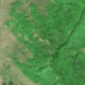
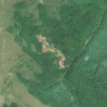

2,7 ha de pădure schimbată lângă Feneș
Între 15 mai 2026 și 27 mai 2026, pe aproximativ 2,7 ha de pădure din orașul Zlatna, lângă Feneș, județul Alba, imaginile Sentinel-2 arată că vegetația a dispărut sau s-a schimbat puternic. Nu pare o tăiere de lemn.
Autorizația de tăiere
nu e tăiere de pădure
Schimbarea nu pare tăiere de lemn, așa că autorizațiile de tăiere nu se aplică. Zona nu era pădure nici înainte: livadă, vie, tufăriș, construcții sau carieră.
Ce se vede în poze: În «poza detaliată» zona marcată era acoperită de pădure deasă, iar în «după» apare o fâșie îngustă, șerpuitoare, de pământ gol, chiar pe lângă pârâu. Forma ei seamănă mai degrabă cu o alunecare de teren sau cu urma unei viituri decât cu o tăiere rasă, iar pădurea din jur a rămas verde.


Înainte și după: Copernicus Sentinel-2, 10 m pe pixel, conturul zonei cu portocaliu. Poza detaliată (Esri World Imagery) e de acum 1–4 ani: arată ce era acolo înainte, nu tăierea.
Pe scurt
- Identificator
- 20260527_46126_23320
- Locul
- Feneș, orașul Zlatna, județul Alba (SIRUTA 1936)
- Coordonate (centru)
- 46.12592, 23.31959 · Google Maps · OpenStreetMap
- Suprafața
- 2,7 ha (din pixeli de 10 m; ± câțiva pixeli pe margine)
- Ultima imagine cu pădurea întreagă
- 15 mai 2026
- Prima imagine cu schimbarea
- 27 mai 2026
- Imagini în care se vede schimbarea
- 6
- Cât de sigur e semnalul din satelit
- medie
- Autorizația cea mai apropiată
- APV 2400050001630 · Ocolul Silvic Alba Iulia, la 23 m de zonă
- Terenul
- pădure de stat, după amenajamentul silvic publicat
- Arie protejată
- Munții Trascăului
- Pădure pierdută în jur, alți ani
- 2017 (Hansen)
- Garda Forestieră
- Cluj
Dacă vrei să verifici sau să sesizezi
- Pădurile din județul Alba sunt în grija Gărzii Forestiere Cluj, care controlează tăierile și dă amenzile.
- Autorizația găsită în zonă e emisă de Ocolul Silvic Alba Iulia.
- Formularul Gărzii Forestiere Naționale primește sesizări și fără nume. Trimite linkul acestei pagini, coordonatele și pozele. Dacă tăierea e în desfășurare, sună la 112.
- Autorizațiile și transporturile de lemn se pot căuta în Inspectorul Pădurii.
Pagina arată ce se vede din satelit și ce scrie în registrul public; nu e o dovadă în sine.
Cum citezi zona
Linkul acestei pagini nu se schimbă. Dacă zona iese vreodată de pe hartă, pagina rămâne, cu data și cu ce știam despre ea.
Pădurea RO, zona 20260527_46126_23320: 2,7 ha, Feneș, orașul Zlatna, județul Alba; schimbare văzută din satelit între 15 mai 2026 și 27 mai 2026. https://iliemihai.github.io/padurea-ro/zona/20260527_46126_23320/ (consultat la [data]). Date: CC BY 4.0.
Datele zonei: GeoJSON · toate zonele: date deschise · licența CC BY 4.0.
Istoricul zonei pe hartă
Starea se poate schimba când registrul publică o autorizație sau când analistul vede poze mai bune. O ținem aici, ca un link citat să arate și ce spuneam atunci.
Pe hartă cel târziu din 5 noiembrie 2026.
- 5 noiembrie 2026 – azi · nu e tăiere de pădure
Detalii tehnice, pentru verificare
De ce acest nivel de încredere:
- văzută schimbată în 6 imagini diferite
- pădurea din jur e neschimbată
- fără părerea AI
- în poze, zona se schimbă vizibil față de pădurea din jur
Ce a văzut analistul cu context: Fâșia deschisă la culoare (roz-bej) are 450 m lungime și urmărește sinuos valea pârâului Valea lui Bibarț (5 m distanță), pe o pantă de 28°, fără margini geometrice și fără platformă sau drum care să continue în afara conturului. În imaginea «înainte» se vedea deja o dungă mai deschisă pe același traseu, ceea ce sugerează o ravenă sau o torențialitate. Autorizația de exploatare cea mai apropiată este la 453 m, cu 0% suprapunere, deci nu confirmă o tăiere. Nu se poate exclude complet un drum de colectare a lemnului sau o tăiere pe o fâșie îngustă, de aceea încrederea este redusă.
- Placa Sentinel-2
- 34TFS
- NDVI de referință
- 0.87
- NBR de referință
- 0.56
- Scăderea în pădurea din jur
- 0.0
- Persistență
- 0.92
- NDVI / NBR după
- 0.624 / 0.343
- Analistul cu context (model)
- altceva · 0.5
Cum se calculează fiecare: metodologia.
Pune harta zonei într-un articol
Copiază codul în articol (merge în majoritatea site-urilor de știri). Sau pune doar linkul: WhatsApp, Facebook și X arată singure poza zonei.